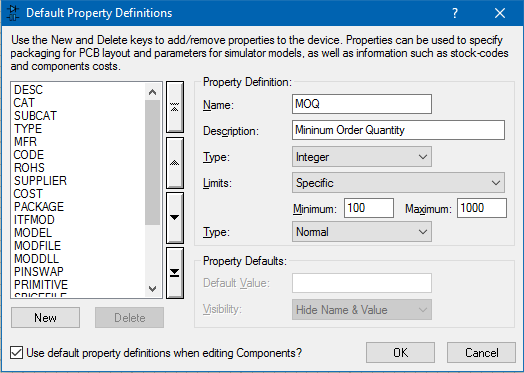
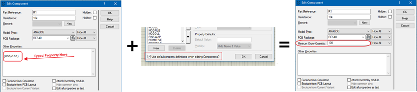

This screen allows you to specify additional properties for the component. All properties added here can then be configured to be output in the bill of materials report (System Menu - Set BOM Scripts) or may be relevant to a simulation model if you have created your own model for a component.
You can directly create, manage and remove properties in the Bill of Materials module within a grid view.
See Also:
BOM Reference Manual - Properties
BOM Reference Manual - Examples
This combo-box displays the names of the property definitions. The property definitions on the right pertain to the highlighted property.
Normal - The property is displayed in its own field on the Edit Component dialogue and can be edited in the normal way.
Read only - The property is displayed in it’s own field in the Edit Component dialogue but cannot be edited.
Advanced - The property appears in the list of advanced properties on the Edit Component dialogue. To edit it, the user must select the property using the Advanced Properties combobox, and then edit the value in the associated data fields. This option is useful for simulator primitives or models that have large numbers of relatively obscure properties.
Hidden - The property does not normally appear on the Edit Component dialogue and can only be edited by selecting the Edit All Properties as Text option.
When checked Proteus will use the default property definitions when they do not exist in a component part. When you define a new property via System Menu -Set property definitions dialogue you are creating a default property definition. Let's assume you did this for Minimum Order Quantity (MoQ) and you define to be a integer greater than 100.

Next you edit a component and type MOQ=150. If this checkbox is selected you will see that when you re-enter the dialogue form the entered string is automatically formatted and part of the Edit Component dialogue form.

We recommend that you leave this option selected unless you are certain that you understand the consequences of removing it.